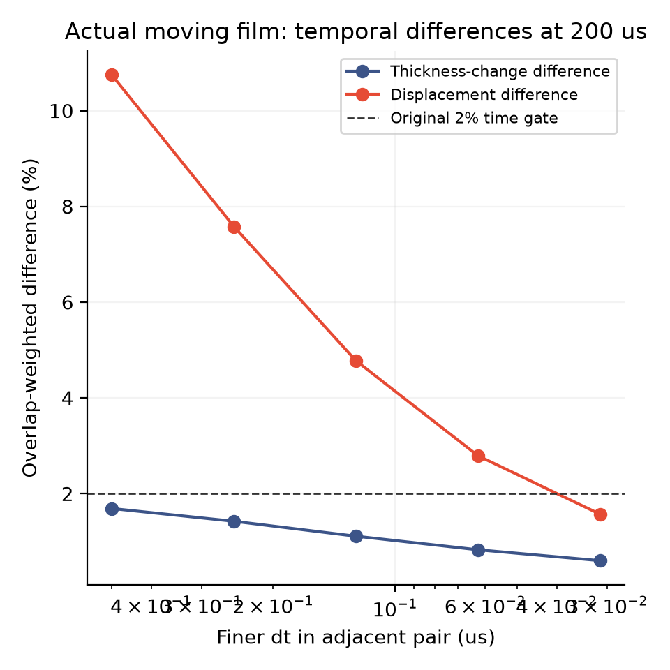
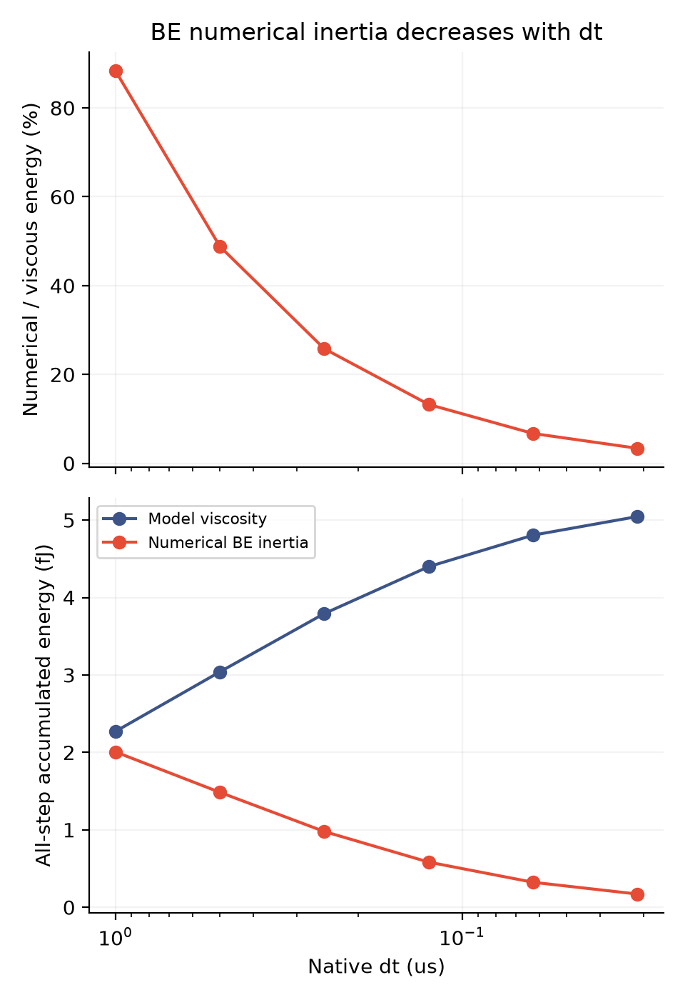
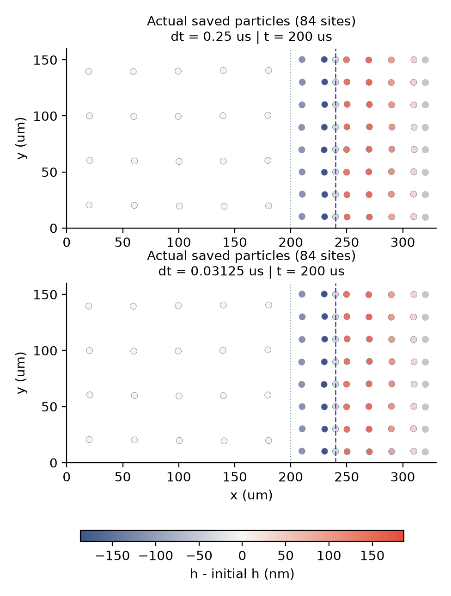

2026-11-13 · 回到实际运动与排液
时间步再小一点，
薄膜运动会趋于一致吗？
01 · 这次只改变时间步
前一轮检查了有解析答案的静态黏性问题。本轮重新运行实际的运动—排液模型，保持材料、初始准备、几何、边界和求解精度不变；物理接口仍在 x = 240 微米，数值细化起点仍为 200 微米。
先用 0.25 微秒重放核对：九份轨迹与观察器文件均与冻结结果逐字节相同，24 项原生检查通过。随后完成三个 200 微秒物理时长的算例，时间步为 0.125、0.0625、0.03125 微秒。新批次包括对照和启动检查，共 5 次运行、12,001 个接受步；没有调整物理黏性或拟合排液速率。
02 · 沿用原来的 2% 判据
我们比较相邻时间步在相同物理时刻的膜厚变化与位移。比较采用真实移动 Voronoi 单元的重叠面积作为权重，两项差异都必须低于 2%；并检查 10、50、200 微秒三个时刻。判据没有换成更容易通过的指标。

| 时间步配对（微秒） | 膜厚变化差异 | 位移差异 | 200 微秒判定 |
|---|---|---|---|
| 1 → 0.5 | 1.69% | 10.74% | 未通过 |
| 0.5 → 0.25 | 1.42% | 7.58% | 未通过 |
| 0.25 → 0.125 | 1.11% | 4.78% | 未通过 |
| 0.125 → 0.0625 | 0.83% | 2.79% | 未通过 |
| 0.0625 → 0.03125 | 0.60% | 1.57% | 通过 |
更粗的配对来自已冻结数据，没有重新计算。最细配对在三个观察时刻的完整结果保存在 逐项比较数据。配对差异不是相对于精确解的误差，单个配对通过也不是数学收敛证明。
03 · 数值惯性损失也在下降
后向欧拉时间离散产生的惯性数值损失，与模型中的真实黏性耗散分开统计。最细时间步中，两者累计比值为 3.38%。这表明减小时间步削弱了这一数值影响；本轮没有单独隔离时间分步与惯性离散，不能把全部运动改善归因于某一个因素。

04 · 真实保存的粒子是什么样？
下图直接绘制 200 微秒时保存的粒子位置，圆盘按相对于初始膜厚的变化着色。灰色为浴液节点，蓝虚线为物理切面，灰点线为数值细化起点。未放大位移，也没有插值生成额外粒子。

最细时间步在终点的浴液计数仍表示浴液向膜净补液；局部膜变薄不能称作整个系统已经排空。
05 · 接口通量还有哪些差异？
补充比较 10–200 微秒的 20 个保存时刻，最细配对的原生相对液量通量差异为 0.05%，材料运动通量差异为 2.74%。这是补充诊断，没有替换原来的膜厚／位移门槛。
另一方面，用恢复压力梯度和记录速度独立估计同一物理切面的通量，与离散账本的 L2 差异仍为：相对液量 2.50%，材料液量 55.66%。这种非相容场恢复尚非精确法向通量验证，时间步趋于一致也不能消除其定义与空间重建问题。
06 · 已验证什么，还有什么没验证？
本轮 85 个保存机械步通过独立 SI／GEOS 核对；原生每步的守恒、能量和力阈值记录也通过。独立公式检查是保存步抽样，不能称作对每个接受步的独立重算。
数据、日志与复现
- 代码、旧参照数据和复现目录说明
- 范围、公式与解释限制 · 冻结实验计划
- 源码、可执行文件哈希与参数 · 完整运行状态
- 时间步与全步损失摘要 · 原始时间配对门槛 · 补充的同 ID 比较
- 独立恢复的物理切面估计 · 通量时间配对补充诊断
- 保存步标量公式核对 · 保存步机械量核对 · 原生日志
- 全部原始文件与分卷哈希 · 逐字节恢复脚本
- 原始数据分卷 1（1.30 MB）
- 原始数据分卷 2（0.91 MB）
- 原始数据分卷 3（1.09 MB）
- 原始数据分卷 4（1.36 MB）
- 原始数据分卷 5（1.17 MB）
- 原始数据分卷 6（1.15 MB）
恢复：python restore_raw.py REPORT_DIRECTORY NEW_OUTPUT_DIRECTORY，拒绝覆盖同名文件。全部原始文件保留，每份 ZIP 小于 5 MB；大 CSV 原件留在本地，分块压缩下载。图片提供 PNG 和矢量 PDF。